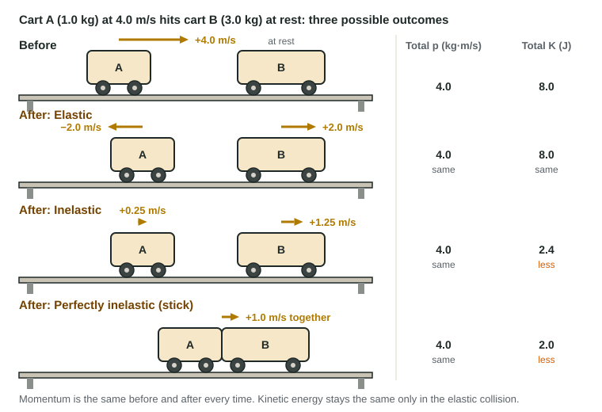

Elastic and Inelastic Collisions
Collisions conserve momentum when no net external force acts.
Part 1 · Hook
Why this matters
Part 2 · Before you start
What this builds on
Part 3 · Prerequisite check
Quick check before you start
1. With zero net external force on a system, its total momentum
- stays constant
- decreases
- becomes zero
- equals its kinetic energy
Show the answer
Conservation of momentum.
- Correct: stays constant:
- decreases:
- becomes zero:
- equals its kinetic energy:
2. Kinetic friction inside a system turns mechanical energy into
- thermal energy
- momentum
- potential energy
- impulse
Show the answer
Nonconservative forces dissipate mechanical energy as thermal energy.
- Correct: thermal energy:
- momentum:
- potential energy:
- impulse:
3. A cart of mass m at speed v has kinetic energy
- ½mv²
- mv
- mv²
- ½mv
Show the answer
K = ½mv².
- Correct: ½mv²:
- mv:
- mv²:
- ½mv:
Part 4 · See it
See it first

Part 5 · Step by step
How it works, step by step
- Two objects collide with no net external forcethe system's momentum is the same before and after, whatever the type of collision
- The objects deform and spring back fullythe collision is elastic: total kinetic energy is unchanged, though it moves between the objects
- Part of the deformation is permanent (heat, sound)the collision is inelastic: total kinetic energy decreases
- The objects stick togetherthe collision is perfectly inelastic: one common final velocity, the largest possible loss of kinetic energy
Part 6 · Key ideas
Key ideas
- Momentum first: in every collision with no net external force, Σp_before = Σp_after.
- Elastic collision: total kinetic energy unchanged (individual K can change). Inelastic: total K decreases. Perfectly inelastic: objects stick, v_f = Σp/Σm.
- Never use energy conservation to find the speed after a sticky collision. Use momentum, then use energy afterward if needed.
- A momentum bar chart shows each object's momentum (with sign) before and after; the total bars match.
- A bounce delivers more impulse than a stick: reversing momentum is a bigger change than stopping.
Part 7 · Misconception
A common mistake
The wrong idea: Momentum and kinetic energy are both conserved in every collision.
What actually happens: Momentum is conserved in every collision with no net external force. Kinetic energy is conserved only in elastic collisions; when objects stick, kinetic energy always decreases.
Part 8 · Check yourself
Check yourself
Exam-style questions. Anything you miss goes into your review queue.
Data table
Collision trials with two carts
In each trial a 0.40 kg cart A rolls into a 0.60 kg cart B at rest on a level, low-friction track. Motion sensors record the velocities just before and just after. Positive is to the right.
| Trial | v_A before (m/s) | v_A after (m/s) | v_B after (m/s) |
|---|---|---|---|
| 1 (magnets) | +1.00 | −0.20 | +0.80 |
| 2 (bare) | +1.00 | +0.10 | +0.60 |
| 3 (Velcro) | +1.00 | +0.40 | +0.40 |
1. In which trials is the total momentum of the two carts the same before and after?
- In each of the three trials
- In trial 1, the elastic one, and not the others
- In trial 3, where the carts stick, and not the others
- In no trial, because the carts' speeds change
Show the answer
Before: (0.40)(1.00) = 0.40 kg·m/s. After: trial 1: −0.08 + 0.48 = 0.40; trial 2: 0.04 + 0.36 = 0.40; trial 3: (1.00)(0.40) = 0.40.
- Correct: In each of the three trials: Right: every trial gives 0.40 kg·m/s after, as before.
- In trial 1, the elastic one, and not the others: Momentum is conserved in every collision with no net external force, elastic or not.
- In trial 3, where the carts stick, and not the others: Sticking does not make momentum special; check the products in trials 1 and 2 too.
- In no trial, because the carts' speeds change: The individual speeds change, but the total momentum does not.
2. Which trial is elastic?
- Trial 2
- Trial 1
- Trial 3
- Each of the three, because momentum is conserved in each
Show the answer
K before = ½(0.40)(1.00)² = 0.20 J. After: trial 1, 0.20 J (elastic); trial 2, 0.11 J (inelastic); trial 3, 0.080 J (perfectly inelastic).
- Trial 2: K after = 0.002 + 0.108 = 0.11 J, less than 0.20 J: inelastic.
- Correct: Trial 1: Right: K after = ½(0.40)(0.20)² + ½(0.60)(0.80)² = 0.20 J, equal to K before.
- Trial 3: The carts stick, which is perfectly inelastic: K drops to 0.080 J.
- Each of the three, because momentum is conserved in each: Conserving momentum does not make a collision elastic. Elastic means total K is unchanged too.
3. How much kinetic energy is converted to other forms in trial 3, in joules?
Type a number in J.
Show the answer
Before: 0.20 J. After: ½(1.00 kg)(0.40 m/s)² = 0.080 J. Converted: 0.12 J, to thermal energy and sound as the Velcro grips.
- Answer: 0.12 J
Diagram
Two carts that stick
The track is level and friction is negligible. Positive is to the right.
4. What is the velocity of the stuck carts just after the collision, in m/s? Include the sign.
Type a number in m/s.
Show the answer
p = (2.0)(+3.0) + (1.0)(−1.5) = +4.5 kg·m/s. v_f = 4.5/3.0 = +1.5 m/s.
- Answer: 1.5 m/s
5. How much kinetic energy does the system lose in the collision, in joules?
Type a number in J.
Show the answer
Before: ½(2.0)(3.0)² + ½(1.0)(1.5)² = 9.0 J + 1.125 J = 10.125 J. After: ½(3.0)(1.5)² = 3.375 J. Lost: 6.75 J, about 6.8 J (to thermal energy and sound).
- Answer: 6.8 J
6. A student finds the final velocity by setting the kinetic energy before equal to the kinetic energy after. What is wrong?
- K is not conserved when carts stick; start from momentum
- Nothing: kinetic energy is conserved in a collision like this one
- The student should have used the carts' weights instead of masses
- Kinetic energy gives the speed but not the direction, so add a sign
Show the answer
In every collision on a frictionless track momentum is conserved; kinetic energy is conserved only if the collision is elastic. When objects stick, start from momentum.
- Correct: K is not conserved when carts stick; start from momentum: Right: start from momentum, which is conserved because no net external force acts.
- Nothing: kinetic energy is conserved in a collision like this one: Kinetic energy is conserved only in elastic collisions. Sticking is the opposite extreme.
- The student should have used the carts' weights instead of masses: Weights would not fix the method; kinetic energy is simply not conserved here.
- Kinetic energy gives the speed but not the direction, so add a sign: The magnitude would still be wrong, because K is not conserved.
Part 9 · Summary
Summary
Part 10 · Up next
What comes next
Part 11 · Connections